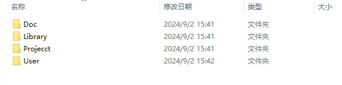
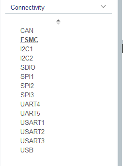
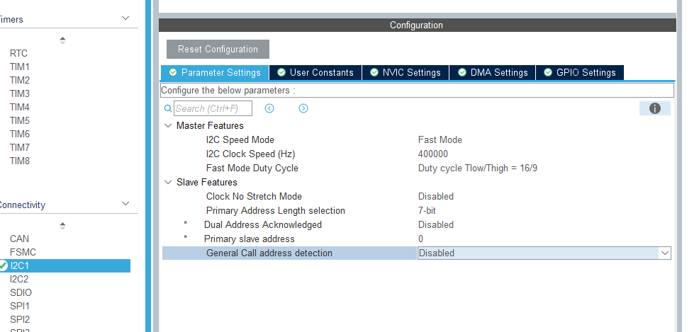
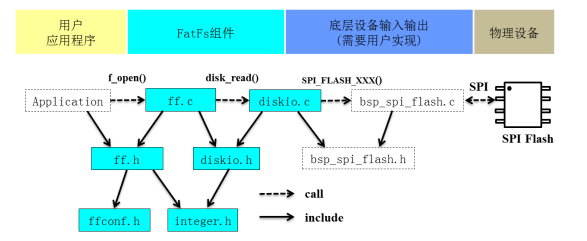
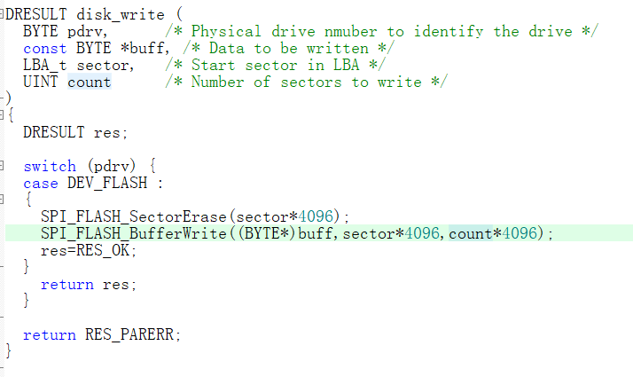

hal库学习 初识stm32（使用野火霸道v-2） STM32 就是指 ST 公司开发的 32 位（总线）微控制器
开发必备：
参考手册 片上外设、寄存器描述
数据手册 引脚设计、内存映射、封装特性
寄存器编程
STM32 芯片架构简图
1 volatile unsigned int * pointer;
访问寄存器需加入volatile，防止被编译器优化。如下是寄存器编程的基本案例
1 2 3 4 5 6 #defineC (volatile unsigned int *) 0x40028000 int main (void ) { *pointer=1 ; }
GPIO 通用输入输出端口
输出部分:
1.保护不正常电压导致gpio烧毁
2.输入高电平，pmos导通，nmos关闭，输出高电平（推） 、反之pmos关闭，nmos导通输出低电平（挽）、输出端口接上拉电阻，输入高电平，下面nmos断开，默认输出高电平，反之输入低电平，nmos导通，输出接到地上，输出低电平（开漏) —-总结：推挽驱动能力强，开漏可实现线与（任意外设被拉到低电平，总线处于低电平)
3，4. 决定输出是出于什么形态进行输出
输入部分：
肖特基触发器（连续信号变为离散信号，例如正弦波变为方波信号）——输入会获取0v或者3.3v
5，6，7. 决定输入是出于什么形态进行输入
寄存器驱动led
从原理图可以看出，io口输出低电平，led灯亮，同时需连接跳帽。
总线矩阵
总线矩阵协调内核系统总线和DMA主控总线之间的访问仲裁，仲裁利用轮换算法。
通过总线的形式，可以更好的将各种外设分离开，可独立将各种外设来控制他的使能与否，控制外设使能与否，既需要控制它的时钟
软件开发步骤
使能GPIOB时钟，外设基地址（复位和时钟控制(RCC)）：0x4002 1000+（偏移地址）0x18=APB2 外设时钟使能寄存器地址
配置为推挽输出，通过端口配置表进行配置（详情看手册），(外设基地址GPIOB) 0X4001 0C00+0x00（端口配置低寄存器），(外设基地址GPIOB) 0X4001 0C00+0x0C（端口输出数据寄存器）
1 2 3 4 5 6 7 8 9 10 11 12 13 14 15 16 17 18 19 20 21 22 23 24 25 #define GPIOB_CLK (*( volatile unsigned int * )(0x40021000+0x18)) #define GPIOB_CRL (*( volatile unsigned int * )(0X40010C00+0x00)) #define GPIOB_ODR (*( volatile unsigned int * )(0X40010C00+0x0C)) int main (void ) { GPIOB_CLK|=(0x01 <<3 ); GPIOB_CRL&=~(0x0F <<(4 *0 )); GPIOB_CRL|=(0x02 <<(4 *0 )); GPIOB_ODR&=~(0x01 <<(1 *0 )); GPIOB_ODR|=0X00 ; GPIOB_CLK|=(0x01 <<3 ); GPIOB_CRL&=~(0x0F <<(4 *1 )); GPIOB_CRL|=(0x02 <<(4 *1 )); GPIOB_ODR&=~(0x01 <<(1 *1 )); GPIOB_ODR|=(0X00 <<(1 *1 )); }
固件库驱动LED 将GPIO外设的基地址强制类型转换，变为结构体指针形式，建立了结构体和实际内存中的一种映射关系，通过访问结构体成员，就等同于访问实际的一小块单元。
hal固件库
手动移植固件库
分别建立各个文件夹，如下图：

使用keil新建工程保存在新建文件夹下的Project文件夹，将相关的库拷贝到Library文件夹下，相关库如下图所示：
User文件夹下新建main函数，doc里则为readme介绍文件
完成之后，打开keil建立分组，其如下图所示：
STARTUP添加启动文件，CMSIS添加system_stm32f1xx.c文件，STM32F10xx_HAL_Driver添加需要的外设驱动文件，user添加用户文件。注意最后加入头文件路径。
详情请参考野火hal库指南([10. 新建工程—库函数版 — 野火]STM32 HAL库开发实战指南——基于F103系列开发板 文档 (embedfire.com) )。
使用CuBeMX （推荐）
打开cubemx，选择第一个，如下图：
之后选择型号，如下图：
点开system core 选择GPIO,配置PB0,PB1,PB5为输出模式，如下图：
配置每个gpio引脚相应参数
时钟配置后面再说，先选择默认配置，配置Project Manager如下图:
之后点击generate code生成代码，在while中加入业务代码即可完成闪烁：
GPIO板级支持包 板级支持包（BSP）介于主板硬件和操作系统中驱动层程序之间的一层，主要实现对操作系统的支持，为上层的驱动程序提供访问硬件设备寄存器的函数包。
构建LED灯板级支持包
bsp_led.h
1 2 3 4 5 6 7 8 9 10 11 12 13 14 15 16 17 18 19 20 21 22 23 #ifndef __BSP_LED_H_ #define __BSP_LED_H_ #include "stm32f1xx.h" #define LED_R_ON do{HAL_GPIO_WritePin(GPIOB,GPIO_PIN_5,GPIO_PIN_RESET);}while(0) #define LED_R_OFF do{HAL_GPIO_WritePin(GPIOB,GPIO_PIN_5,GPIO_PIN_SET);}while(0) #define LED_R_TOGGLE do{HAL_GPIO_TogglePin(GPIOB,GPIO_PIN_5);}while(0) #define LED_G_ON do{HAL_GPIO_WritePin(GPIOB,GPIO_PIN_0,GPIO_PIN_RESET);}while(0) #define LED_G_OFF do{HAL_GPIO_WritePin(GPIOB,GPIO_PIN_0,GPIO_PIN_SET);}while(0) #define LED_G_TOGGLE do{HAL_GPIO_TogglePin(GPIOB,GPIO_PIN_0);} while(0) #define LED_B_ON do{HAL_GPIO_WritePin(GPIOB,GPIO_PIN_1,GPIO_PIN_RESET);}while(0) #define LED_B_OFF do{HAL_GPIO_WritePin(GPIOB,GPIO_PIN_1,GPIO_PIN_SET);}while(0) #define LED_B_TOGGLE do{HAL_GPIO_TogglePin(GPIOB,GPIO_PIN_1);}while(0) void LED_GPIO_Init (void ) ;#endif
bsp_led.c
1 2 3 4 5 6 7 8 9 10 11 12 13 #include "bsp_led.h" void LED_GPIO_Init (void ) { GPIO_InitTypeDef LED_GPIO_InitStruct; __HAL_RCC_GPIOB_CLK_ENABLE(); LED_GPIO_InitStruct.Mode=GPIO_MODE_OUTPUT_PP; LED_GPIO_InitStruct.Pin=GPIO_PIN_0|GPIO_PIN_1|GPIO_PIN_5; LED_GPIO_InitStruct.Pull=GPIO_NOPULL; LED_GPIO_InitStruct.Speed=GPIO_SPEED_FREQ_LOW; HAL_GPIO_Init(GPIOB,&LED_GPIO_InitStruct); }
STM32程序的启动过程 编译工具链 :C/C++的程序需要经过 gcc 等编译成二进制程序才能被计算机使用,这些工具用在程序文件的预编译、编译、链接等整个过程中，这整一套工具就被称为 编译工具链（Toolchain）
ARM 芯片上电以后会触发复位异常，跳转到中断向量表特定偏移地址，获取里面的地址去执行。
修改复位异常内的内容，就可以让处理器去执行我们指定的操作。
简而言之：
触发异常->中断向量表->用户程序
这段需参考st中文参考手册：存储器和总线架构中的启动配置。
【主闪存存储器】STM32内置的Flash，一般我们使用JTAG或者SWD模式下载程序时，就是下载到这个里面，重启后也直接从这启动程序，可以理解为电脑中的软件安装在这里。
【内置 SRAM】芯片内置的RAM区，没有程序存储的能力了，可以理解为这个是电脑的内存条。
【系统存储器】一块特定的区域，只读ROM存储器，STM32厂家在这个区域内部预置了一段BootLoader，也就是我们常说的ISP程序，出厂后无法修改。选用这种模式启动,可以从串口下载程序到Flash中，可以理解为电脑中的Window系统安装在这里。
startup_stm32f103xe.s启动文件：
1 2 3 4 5 6 7 This module performs: ;* - Set the initial SP ;* - Set the initial PC == Reset_Handler ;* - Set the vector table entries with the exceptions ISR address ;* - Configure the clock system ;* - Branches to __main in the C library (which eventually ;* calls main()).
初始化堆栈指针
设置PC指针的值
设置中断向量表
配置系统时钟
调用C库函数_main初始化堆栈的工作，最终会跳转到我们自己编写的堆栈
STM32复位和时钟控制 RCC
stm32三种复位
详情参考中文参考手册6.1
时钟 （类似心跳）
驱动系统时钟
二级时钟源
时钟树
这里可以选择配置时钟类型
上图为需要配置的时钟树，此时需要到产品手册5.3.1 找到通用工作条件，参考配置：
但是时钟选取越高，功耗也会更高。
中断概览 优先级
中断分为：可编程、不可编程
小值优先原则，中断优先级数越小，中断会被优先响应
中断优先级按照优先级分组配置
以F103为例，可使用高4位bit，也就是16个优先级
如果具有相同的抢占优先级，则子优先级高的先行，入还相同，则IRQ编号小的先行，故抢占优先级>子优先级>IRQ编号
exti外部中断控制器
编号1是输入线，EXTI 控制器有 19 个中断/事件输入线，这些输入线可以通过寄存器设置为任 意一个 GPIO，也可以是一些外设的事件，这部分内容我们将在后面专门讲解。输入线一般是存在电平变化的信号。
编号2是一个边沿检测电路，它会根据上升沿触发选择寄存器 (EXTI_RTSR) 和下降沿触发选择 寄存器 (EXTI_FTSR) 对应位的设置来控制信号触发。边沿检测电路以输入线作为信号输入端，如 果检测到有边沿跳变就输出有效信号 1 给编号 3 电路，否则输出无效信号 0。
编号 3 电路实际就是一个或门电路，它一个输入来自编号 2 电路，另外一个输入来自软件中断事 件寄存器 (EXTI_SWIER)。EXTI_SWIER 允许我们通过程序控制就可以启动中断/事件线（软件触发）
编号 4 电路是一个与门电路，它一个输入是编号 3 电路，另外一个输入来自中断屏蔽寄存器 (EXTI_IMR)。与门电路要求输入都为 1 才输出 1，导致的结果是如果 EXTI_IMR 设置为 0 时，那 不管编号 3 电路的输出信号是 1 还是 0，最终编号 4 电路输出的信号都为 0；如果 EXTI_IMR 设置为 1 时，最终编号 4 电路输出的信号才由编号 3 电路的输出信号决定
编号 5 是将 EXTI_PR 寄存器内容输出到 NVIC 内，从而实现系统中断事件控制。
编号 7 是一个脉冲发生器电路，当它的输入端，即编号 6 电路的输出端，是一个有效信号 1 时就 会产生一个脉冲；如果输入端是无效信号就不会输出脉冲。
1 2 3 4 5 6 7 8 9 10 11 12 13 14 15 16 17 18 19 20 void MX_GPIO_Init (void ) { GPIO_InitTypeDef GPIO_InitStruct = {0 }; __HAL_RCC_GPIOF_CLK_ENABLE(); __HAL_RCC_GPIOA_CLK_ENABLE(); GPIO_InitStruct.Pin = GPIO_PIN_2; GPIO_InitStruct.Mode = GPIO_MODE_IT_RISING_FALLING; GPIO_InitStruct.Pull = GPIO_NOPULL; HAL_GPIO_Init(GPIOF, &GPIO_InitStruct); HAL_NVIC_SetPriority(EXTI2_IRQn, 12 , 0 ); HAL_NVIC_EnableIRQ(EXTI2_IRQn); }
SysTick定时器 计数宽度：24bit来存储数据，计数器工作模式向下递减，计数器的工作周期1/CLKSource。
systick属于内核外设，最长用的功能则为计数。
工程讲解：
HAL_Delay()函数则通过systick实现。
1 2 3 4 5 6 7 8 9 10 11 12 13 14 15 16 17 void SysTick_Init (void ) { if (HAL_SYSTICK_Config(SystemCoreClock / 100000 )) { while (1 ); } }
此刻定时器以72Mhz的频率计算720次。
1 2 3 4 5 6 7 8 9 10 11 12 13 14 15 16 void Delay_us (__IO u32 nTime) { TimingDelay = nTime; while (TimingDelay != 0 ); } void TimingDelay_Decrement (void ) { if (TimingDelay != 0x00 ) { TimingDelay--; } }
没隔SystemFrequency / 100000产生一次中断进行递减
1 2 3 4 void SysTick_Handler (void ) { TimingDelay_Decrement(); }
HAL框架 对外设的封装：
xx_HandledTypeDef：
Instance（xx_TypeDef类型，实例化一个具体的外设对象，指向外设基地址）
Init成员（xx_InitTypeDef）
Hdma成员
lock锁
status状态
对外设初始化步骤：
Hal_xx_Init（配置功能）
Hal__xxMspInit（外设初始化）
其他Init方法
外设使用逻辑：
阻塞轮询（polling） xx_start xx_write xx_read等，会传入一个Timeout
中断（it）IRQ_xx_Handler
DMA
其他（标志查询、清除，中断失能、使能，时钟使能、失能）
USART 同步异步收发传输器，广泛应用于串口通信（RS232协议（DB9接口））
usart框图：
TX：发送数据输出引脚。 RX：接收数据输入引脚，由于这些引脚口属于外设，则需要配置为复用模式
生成串口初始化代码

1 2 3 4 5 6 7 8 9 10 11 12 HAL_Init(); SystemClock_Config(); DEBUG_USART_Config(); printf ("欢迎使用野火开发板\n" ); Usart_SendString( (uint8_t *)"自定义函数输出：这是一个串口中断接收回显实验\n" );
初始化：
1 UartHandle.Instance = DEBUG_USART;
定义结构体句柄
通过HAL_UART_MspInit进行对应引脚初始化
1 2 3 4 5 6 7 8 9 10 11 12 13 14 15 16 17 18 19 20 21 22 23 24 25 26 GPIO_InitTypeDef GPIO_InitStruct; DEBUG_USART_CLK_ENABLE(); DEBUG_USART_RX_GPIO_CLK_ENABLE(); DEBUG_USART_TX_GPIO_CLK_ENABLE(); GPIO_InitStruct.Pin = DEBUG_USART_TX_PIN; GPIO_InitStruct.Mode = GPIO_MODE_AF_PP; GPIO_InitStruct.Pull = GPIO_PULLUP; GPIO_InitStruct.Speed = GPIO_SPEED_FREQ_HIGH; HAL_GPIO_Init(DEBUG_USART_TX_GPIO_PORT, &GPIO_InitStruct); GPIO_InitStruct.Pin = DEBUG_USART_RX_PIN; GPIO_InitStruct.Mode=GPIO_MODE_AF_INPUT; HAL_GPIO_Init(DEBUG_USART_RX_GPIO_PORT, &GPIO_InitStruct); HAL_NVIC_SetPriority(DEBUG_USART_IRQ ,0 ,1 ); HAL_NVIC_EnableIRQ(DEBUG_USART_IRQ );
通过前面的结构体，配置后续功能
1 2 3 4 5 6 7 8 9 10 11 12 13 14 UartHandle.Instance = DEBUG_USART; UartHandle.Init.BaudRate = DEBUG_USART_BAUDRATE; UartHandle.Init.WordLength = UART_WORDLENGTH_8B; UartHandle.Init.StopBits = UART_STOPBITS_1; UartHandle.Init.Parity = UART_PARITY_NONE; UartHandle.Init.HwFlowCtl = UART_HWCONTROL_NONE; UartHandle.Init.Mode = UART_MODE_TX_RX; HAL_UART_Init(&UartHandle); __HAL_UART_ENABLE_IT(&UartHandle,UART_IT_RXNE);
DMA DMA(Direct Memory Access)—直接存储器存取，是单片机的一个外设，它的主要功能是用来搬数 据，但是不需要占用 CPU，即在传输数据的时候，CPU 可以干其他的事情，好像是多线程一样。 数据传输支持从外设到存储器或者存储器到存储器，这里的存储器可以是 SRAM 或者是 FLASH。
1.dma请求，告诉dma我准备好了
2.通道选择
3.数据搬运的目标地址
dma编程要点：
建立传输通道：存储器-存储器 外设-存储器 存储器-外设
确定传输对象：uart（源）- 内存（目标）
敲定传输细节：通优先级，传输双方数据格式，是否循环传输等
dma内存-内存生成
dma外设-内存生成（uart举例）
存储器到存储器
初始化
1 2 3 4 5 6 7 8 9 10 11 12 13 14 15 16 17 18 19 20 21 22 23 24 25 26 27 28 29 DMA_HandleTypeDef DMA_Handle; #define DMA_STREAM DMA1_Channel6 #define DMA_STREAM_CLOCK() __HAL_RCC_DMA1_CLK_ENABLE(); #define BUFFER_SIZE 32 HAL_StatusTypeDef DMA_status = HAL_ERROR; DMA_STREAM_CLOCK(); DMA_Handle.Instance=DMA_STREAM; DMA_Handle.Init.Direction=DMA_MEMORY_TO_MEMORY; DMA_Handle.Init.PeriphInc=DMA_PINC_ENABLE; DMA_Handle.Init.MemInc=DMA_MINC_ENABLE; DMA_Handle.Init.PeriphDataAlignment=DMA_PDATAALIGN_WORD; DMA_Handle.Init.MemDataAlignment=DMA_MDATAALIGN_WORD; DMA_Handle.Init.Mode=DMA_NORMAL; DMA_Handle.Init.Priority=DMA_PRIORITY_MEDIUM; HAL_DMA_Init(&DMA_Handle);
判断数据是否一致
1 2 3 4 5 6 7 8 9 10 11 12 13 14 15 16 17 18 19 20 21 22 23 24 25 26 27 28 29 30 31 32 33 const uint32_t aSRC_Const_Buffer[BUFFER_SIZE]= { 0x01020304 ,0x05060708 ,0x090A0B0C ,0x0D0E0F10 , 0x11121314 ,0x15161718 ,0x191A1B1C ,0x1D1E1F20 , 0x21222324 ,0x25262728 ,0x292A2B2C ,0x2D2E2F30 , 0x31323334 ,0x35363738 ,0x393A3B3C ,0x3D3E3F40 , 0x41424344 ,0x45464748 ,0x494A4B4C ,0x4D4E4F50 , 0x51525354 ,0x55565758 ,0x595A5B5C ,0x5D5E5F60 , 0x61626364 ,0x65666768 ,0x696A6B6C ,0x6D6E6F70 , 0x71727374 ,0x75767778 ,0x797A7B7C ,0x7D7E7F80 }; uint32_t aDST_Buffer[BUFFER_SIZE];uint8_t Buffercmp (const uint32_t * pBuffer, uint32_t * pBuffer1, uint16_t BufferLength) { while (BufferLength--) { if (*pBuffer != *pBuffer1) { return 0 ; } pBuffer++; pBuffer1++; } return 1 ; }
主函数逻辑：
1 2 3 4 5 6 7 8 9 10 11 12 13 14 15 16 17 18 19 20 21 22 23 24 25 26 27 28 29 30 31 32 33 34 35 uint8_t TransferStatus; SystemClock_Config(); LED_GPIO_Config(); LED_PURPLE; Delay(0xFFFFFF ); DMA_Config(); while (__HAL_DMA_GET_FLAG(&DMA_Handle,DMA_FLAG_TC6)==DISABLE) { } TransferStatus=Buffercmp(aSRC_Const_Buffer, aDST_Buffer, BUFFER_SIZE); if (TransferStatus==0 ) { LED_RED; } else { LED_BLUE; } while (1 ) { }
外设到存储器
初始化
1 2 3 4 5 6 7 8 9 10 11 12 13 14 15 16 17 18 19 20 21 22 23 24 25 26 27 28 29 30 31 32 33 34 35 36 37 38 39 40 41 42 43 44 45 46 47 48 49 50 51 52 53 54 55 56 57 58 59 60 61 62 63 64 65 66 67 uint8_t SendBuff[SENDBUFF_SIZE];DMA_HandleTypeDef DMA_Handle; UART_HandleTypeDef UartHandle; void Debug_USART_Config (void ) { GPIO_InitTypeDef GPIO_InitStruct; DEBUG_USART_RX_GPIO_CLK_ENABLE(); DEBUG_USART_TX_GPIO_CLK_ENABLE(); DEBUG_USART_CLK_ENABLE(); GPIO_InitStruct.Pin = DEBUG_USART_TX_PIN; GPIO_InitStruct.Mode = GPIO_MODE_AF_PP; GPIO_InitStruct.Pull = GPIO_PULLUP; GPIO_InitStruct.Speed = GPIO_SPEED_FREQ_HIGH; HAL_GPIO_Init(DEBUG_USART_TX_GPIO_PORT, &GPIO_InitStruct); GPIO_InitStruct.Pin = DEBUG_USART_RX_PIN; GPIO_InitStruct.Mode=GPIO_MODE_AF_INPUT; HAL_GPIO_Init(DEBUG_USART_RX_GPIO_PORT, &GPIO_InitStruct); UartHandle.Instance = DEBUG_USART; UartHandle.Init.BaudRate = DEBUG_USART_BAUDRATE; UartHandle.Init.WordLength = UART_WORDLENGTH_8B; UartHandle.Init.StopBits = UART_STOPBITS_1; UartHandle.Init.Parity = UART_PARITY_NONE; UartHandle.Init.HwFlowCtl = UART_HWCONTROL_NONE; UartHandle.Init.Mode = UART_MODE_TX_RX; HAL_UART_Init(&UartHandle); } void USART_DMA_Config (void ) { DEBUG_USART_DMA_CLK_ENABLE(); DMA_Handle.Instance=DEBUG_USART_DMA_STREAM; DMA_Handle.Init.Direction=DMA_MEMORY_TO_PERIPH; DMA_Handle.Init.PeriphInc=DMA_PINC_DISABLE; DMA_Handle.Init.MemInc=DMA_MINC_ENABLE; DMA_Handle.Init.PeriphDataAlignment=DMA_PDATAALIGN_BYTE; DMA_Handle.Init.MemDataAlignment=DMA_MDATAALIGN_BYTE; DMA_Handle.Init.Mode=DMA_NORMAL; DMA_Handle.Init.Priority=DMA_PRIORITY_MEDIUM; HAL_DMA_Init(&DMA_Handle); __HAL_LINKDMA(&UartHandle, hdmatx, DMA_Handle); }
I2C
它是一个支持设备的总线。“总线”指多个设备共用的信号线。在一个 I2C 通讯总线中，可 连接多个 I2C 通讯设备，支持多个通讯主机及多个通讯从机。
一个 I2C 总线只使用两条总线线路，一条双向串行数据线 (SDA) ，一条串行时钟线 (SCL)。 数据线即用来表示数据，时钟线用于数据收发同步。
每个连接到总线的设备都有一个独立的地址，主机可以利用这个地址进行不同设备之间的 访问。
总线通过上拉电阻接到电源。当 I2C 设备空闲时，会输出高阻态，而当所有设备都空闲，都 输出高阻态时，由上拉电阻把总线拉成高电平。
多个主机同时使用总线时，为了防止数据冲突，会利用仲裁方式决定由哪个设备占用总线。
具有三种传输模式：标准模式传输速率为 100kbit/s ，快速模式为 400kbit/s ，高速模式下可 达 3.4Mbit/s，但目前大多 I 2C 设备尚不支持高速模式。
连接到相同总线的 IC 数量受到总线的最大电容 400pF 限制。
通讯起始信号
scl高电平时sda从高到低，通讯开始，scl高电平时sda由低向高，表示通讯停止，一般由主机产生。
数据有效性
SCL 为高电平的时候 SDA 表示的数据有效，即此 时的 SDA 为高电平时表示数据“1”，为低电平时表示数据“0”。当 SCL 为低电平时，SDA 的数 据无效，一般在这个时候 SDA 进行电平切换，为下一次表示数据做好准备。
如何使用stm32产生I2C协议信号

1 2 3 4 5 6 7 8 9 10 11 12 13 14 15 16 17 18 19 20 21 22 23 24 25 26 27 28 29 30 31 32 33 34 35 36 37 38 39 40 41 42 43 44 45 46 47 48 49 50 51 52 53 54 55 56 void HAL_I2C_MspInit (I2C_HandleTypeDef *hi2c) { GPIO_InitTypeDef GPIO_InitStruct; I2Cx_SCL_GPIO_CLK_ENABLE(); I2Cx_SDA_GPIO_CLK_ENABLE(); I2Cx_CLK_ENABLE(); GPIO_InitStruct.Pin = I2Cx_SCL_PIN; GPIO_InitStruct.Mode = GPIO_MODE_AF_OD; GPIO_InitStruct.Pull = GPIO_NOPULL; GPIO_InitStruct.Speed = GPIO_SPEED_FREQ_HIGH; HAL_GPIO_Init(I2Cx_SCL_GPIO_PORT, &GPIO_InitStruct); GPIO_InitStruct.Pin = I2Cx_SDA_PIN; HAL_GPIO_Init(I2Cx_SDA_GPIO_PORT, &GPIO_InitStruct); I2Cx_FORCE_RESET() ; I2Cx_RELEASE_RESET(); } static void I2C_Mode_Config (void ) { I2C_Handle.Instance = I2Cx; I2C_Handle.Init.AddressingMode = I2C_ADDRESSINGMODE_7BIT; I2C_Handle.Init.ClockSpeed = 400000 ; I2C_Handle.Init.DualAddressMode = I2C_DUALADDRESS_DISABLE; I2C_Handle.Init.DutyCycle = I2C_DUTYCYCLE_2; I2C_Handle.Init.GeneralCallMode = I2C_GENERALCALL_DISABLE; I2C_Handle.Init.NoStretchMode = I2C_NOSTRETCH_DISABLE; I2C_Handle.Init.OwnAddress1 = I2C_OWN_ADDRESS7 ; I2C_Handle.Init.OwnAddress2 = 0 ; HAL_I2C_Init(&I2C_Handle); }
1 2 3 4 5 6 7 8 9 10 11 12 13 14 15 16 17 18 19 20 21 22 23 24 25 26 27 28 29 30 31 32 33 34 35 36 37 38 39 40 41 42 43 44 45 46 47 48 49 50 51 52 53 54 55 56 57 58 59 60 61 62 63 64 65 66 67 68 69 70 71 72 73 74 75 76 77 78 79 80 81 82 uint32_t I2C_EE_ByteWrite (uint8_t * pBuffer, uint8_t WriteAddr) { HAL_StatusTypeDef status = HAL_OK; status = HAL_I2C_Mem_Write(&I2C_Handle, EEPROM_ADDRESS, (uint16_t )WriteAddr, I2C_MEMADD_SIZE_8BIT, pBuffer, 1 , 100 ); if (status != HAL_OK) { } while (HAL_I2C_GetState(&I2C_Handle) != HAL_I2C_STATE_READY) { } while (HAL_I2C_IsDeviceReady(&I2C_Handle, EEPROM_ADDRESS, EEPROM_MAX_TRIALS, I2Cx_TIMEOUT_MAX) == HAL_TIMEOUT); while (HAL_I2C_GetState(&I2C_Handle) != HAL_I2C_STATE_READY) { } return status; } uint32_t I2C_EE_PageWrite (uint8_t * pBuffer, uint8_t WriteAddr, uint8_t NumByteToWrite) { HAL_StatusTypeDef status = HAL_OK; status=HAL_I2C_Mem_Write(&I2C_Handle, EEPROM_ADDRESS,WriteAddr, I2C_MEMADD_SIZE_8BIT, (uint8_t *)(pBuffer),NumByteToWrite, 100 ); while (HAL_I2C_GetState(&I2C_Handle) != HAL_I2C_STATE_READY) { } while (HAL_I2C_IsDeviceReady(&I2C_Handle, EEPROM_ADDRESS, EEPROM_MAX_TRIALS, I2Cx_TIMEOUT_MAX) == HAL_TIMEOUT); while (HAL_I2C_GetState(&I2C_Handle) != HAL_I2C_STATE_READY) { } return status; } uint32_t I2C_EE_BufferRead (uint8_t * pBuffer, uint8_t ReadAddr, uint16_t NumByteToRead) { HAL_StatusTypeDef status = HAL_OK; status=HAL_I2C_Mem_Read(&I2C_Handle,EEPROM_ADDRESS,ReadAddr, I2C_MEMADD_SIZE_8BIT, (uint8_t *)pBuffer, NumByteToRead,1000 ); return status; }
SPI CPOL :CPOL=0 时，SCK 在空闲状态时为低电平，CPOL=1 时，则相反
CPHA :当 CPHA=0 时，MOSI 或 MISO 数据线上的信号将会在 SCK 时钟线的“奇数边沿”被采样。当 CPHA=1 时，数据线在 SCK 的“偶数边沿”采样。
4种状态 ：
cubemax配置：
*初始化目标引脚和端口时钟 ，spi外设配置*
1 2 3 4 5 6 7 8 9 10 11 12 13 14 15 16 17 18 19 20 21 22 23 24 25 26 27 28 29 30 31 32 33 34 35 36 37 38 39 40 41 42 43 44 45 46 47 48 49 50 51 52 53 54 55 56 57 58 void HAL_SPI_MspInit (SPI_HandleTypeDef *hspi) { GPIO_InitTypeDef GPIO_InitStruct; SPIx_SCK_GPIO_CLK_ENABLE(); SPIx_MISO_GPIO_CLK_ENABLE(); SPIx_MOSI_GPIO_CLK_ENABLE(); SPIx_CS_GPIO_CLK_ENABLE(); SPIx_CLK_ENABLE(); GPIO_InitStruct.Pin = SPIx_SCK_PIN; GPIO_InitStruct.Mode = GPIO_MODE_AF_PP; GPIO_InitStruct.Pull = GPIO_PULLUP; GPIO_InitStruct.Speed = GPIO_SPEED_FREQ_HIGH; HAL_GPIO_Init(SPIx_SCK_GPIO_PORT, &GPIO_InitStruct); GPIO_InitStruct.Pin = SPIx_MISO_PIN; HAL_GPIO_Init(SPIx_MISO_GPIO_PORT, &GPIO_InitStruct); GPIO_InitStruct.Pin = SPIx_MOSI_PIN; HAL_GPIO_Init(SPIx_MOSI_GPIO_PORT, &GPIO_InitStruct); GPIO_InitStruct.Pin = FLASH_CS_PIN ; GPIO_InitStruct.Mode = GPIO_MODE_OUTPUT_PP; HAL_GPIO_Init(FLASH_CS_GPIO_PORT, &GPIO_InitStruct); } void SPI_FLASH_Init (void ) { SpiHandle.Instance = SPIx; SpiHandle.Init.BaudRatePrescaler = SPI_BAUDRATEPRESCALER_4; SpiHandle.Init.Direction = SPI_DIRECTION_2LINES; SpiHandle.Init.CLKPhase = SPI_PHASE_2EDGE; SpiHandle.Init.CLKPolarity = SPI_POLARITY_HIGH; SpiHandle.Init.CRCCalculation = SPI_CRCCALCULATION_DISABLE; SpiHandle.Init.CRCPolynomial = 7 ; SpiHandle.Init.DataSize = SPI_DATASIZE_8BIT; SpiHandle.Init.FirstBit = SPI_FIRSTBIT_MSB; SpiHandle.Init.NSS = SPI_NSS_SOFT; SpiHandle.Init.TIMode = SPI_TIMODE_DISABLE; SpiHandle.Init.Mode = SPI_MODE_MASTER; HAL_SPI_Init(&SpiHandle); __HAL_SPI_ENABLE(&SpiHandle); }
SPI基本收发过程
1 2 3 4 5 6 7 8 9 10 11 12 13 14 15 16 17 18 19 20 21 22 23 24 25 uint8_t SPI_FLASH_SendByte (uint8_t byte) { SPITimeout = SPIT_FLAG_TIMEOUT; while (__HAL_SPI_GET_FLAG( &SpiHandle, SPI_FLAG_TXE ) == RESET) { if ((SPITimeout--) == 0 ) return SPI_TIMEOUT_UserCallback(0 ); } WRITE_REG(SpiHandle.Instance->DR, byte); SPITimeout = SPIT_FLAG_TIMEOUT; while (__HAL_SPI_GET_FLAG( &SpiHandle, SPI_FLAG_RXNE ) == RESET) { if ((SPITimeout--) == 0 ) return SPI_TIMEOUT_UserCallback(1 ); } return READ_REG(SpiHandle.Instance->DR); }
w25q64写入前需要擦除
1 2 3 4 5 6 7 8 9 10 11 12 13 14 15 16 17 18 19 20 21 22 23 24 25 26 void SPI_FLASH_SectorErase (uint32_t SectorAddr) { SPI_FLASH_WriteEnable(); SPI_FLASH_WaitForWriteEnd(); SPI_FLASH_CS_LOW(); SPI_FLASH_SendByte(W25X_SectorErase); SPI_FLASH_SendByte((SectorAddr & 0xFF0000 ) >> 16 ); SPI_FLASH_SendByte((SectorAddr & 0xFF00 ) >> 8 ); SPI_FLASH_SendByte(SectorAddr & 0xFF ); SPI_FLASH_CS_HIGH(); SPI_FLASH_WaitForWriteEnd(); }
FatFs文件系统 fatfs官网：FatFs - Generic FAT Filesystem Module (elm-chan.org)
下载后，查看帮助文档：
integer.h：文件中包含了一些数值类型定义。
diskio.c：包含底层存储介质的操作函数，这些函数需要用户自己实现，主要添加底层驱动 函数。
ff.c：FatFs 核心文件，文件管理的实现方法。该文件独立于底层介质操作文件的函数，利用 这些函数实现文件的读写。
cc936.c：本文件在 option 目录下，是简体中文支持所需要添加的文件，包含了简体中文的 GBK 和 Unicode 相互转换功能函数。
ffconf.h: 这个头文件包含了对 FatFs 功能配置的宏定义，通过修改这些宏定义就可以裁剪 FatFs 的功能。如需要支持简体中文，需要把 ffconf.h 中的 _CODE_PAGE 的宏改成 936 并把 上面的 cc936.c 文件加入到工程之中。

源码移植 导入Fatfs发现抱错：
挨个解决，由于需要选择不同的设备，故需将diskio中的switch语句中没有用的设备删掉。
每个接口都删除掉，如下：
并删除每个函数里的result
此时再编译显示一个错：
由官网可知：
重新复写get函数
重新构造disk_status，判断id是否正常
重新构造初始化函数：
重新构造diskread函数：
重新构造diskwrite函数：

重写ioct函数：
如果没有格式化过系统，则需将该宏修改，再ffconf.h
更改编码页格式
支持长文件名
更改扇区大小：
文件系统使用流程：
挂载文件系统到一个设备上
打开一个文件
数据的读写
完成后，将文件关闭
注意事项：
写完之后要关闭在读才能读出写入的数据，故要注意文件指针的位置
cubemx移植
文件系统核心ff.c没有修改
cubumx生成的FatFs对底层进行修改，没有用switch，而是使用结构体数组进行操作，更像中间件
ff_gen_drv文件链接驱动文件
xx_diskio.c对应具体设备的驱动接口，例如spi-flash
fatfs.c文件用于上层应用开发，具体到对文件系统的